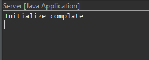
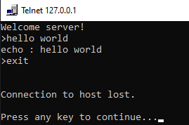
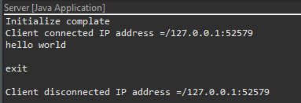
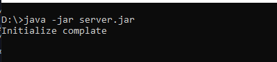
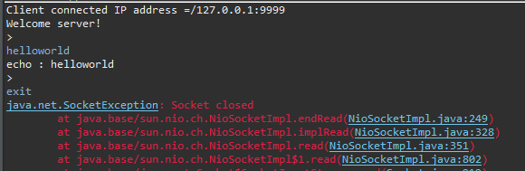
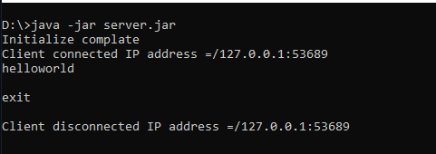

こんにちは。明月です。
この投稿はJavaでネットワーク通信(Socket)をする方法に関する説明です。
プログラムでソケットと言えばプログラムとプログラムまたはPCとPC間に通信をするという意味です。
簡単に思えば通信する時に伝送するパケット(データ)がパソコンのLANカードによってランケーブルに伝送します。ランケーブルに伝送したデータはDNSとルータなどを通って到達しようとPCのLANカードによって最終に目標したプログラムでパケット(データ)を読み込みます。端末と端末の間にデータを通信します。
この時、我々は各端末間にデータ変換や装置間のプロトコール、規約などに関して実装してないです。この通信規約に関してはすべてOS側で設定して(OSI7階層)、我々はその上で差し込んで使うという意味でSocket通信という言います。
link - OSI参照モデル
Socket通信規約は処理プロシージャが決まっています。
先に、通信接続を待つ側をサーバという言います。サーバはPortを開いてクライアントの接続を待ちます。そして接続する側をクライアントという言います。クライアントがサーバのIPとPortに接続したら通信が開始します。
サーバとクライアント間の通信はSend、Receiveの形式でデータを送信、受信します。そして通信が終わればcloseで接続を切ります。

そのSocketの概念でJavaでソケット(Socket)通信を作成みましょう。
先にはサーバを作成してWindowのTelentプログラムを利用して接続を確認します。確認できたらその仕様に合わせてClientを作成しましょう。
import java.io.InputStream;
import java.io.OutputStream;
import java.net.InetSocketAddress;
import java.net.ServerSocket;
import java.net.Socket;
import java.util.ArrayList;
import java.util.List;
import java.util.concurrent.ExecutorService;
import java.util.concurrent.Executors;
// サーバクラス
public class Server {
// バッファーサイズ設定
private final static int BUFFER_SIZE = 1024;
// 実行関数
public static void main(String[] args) {
// サーバインスタンス生成(プログラムが終了する時に自動にcloseが呼び出す。)
try (ServerSocket server = new ServerSocket()) {
// 9999ポートでサーバを待つ。
InetSocketAddress ipep = new InetSocketAddress(9999);
// サーバインスタンスにソケット情報をbind
server.bind(ipep);
// コンソール出力
System.out.println("Initialize complate");
// クライアントからメッセージを待つスレッドプール
ExecutorService receiver = Executors.newCachedThreadPool();
// クライアントリスト
List<Socket> list = new ArrayList<>();
// サーバは無限待機
while (true) {
try {
// クライアントから接続待機
Socket client = server.accept();
// クライアントリストに追加
list.add(client);
// 接続情報をコンソールに出力
System.out.println("Client connected IP address =" + client.getRemoteSocketAddress().toString());
// クライアントスレッドプールを開始
receiver.execute(() -> {
// clientが終了すればソケットをcloseする
// OutputStreamとInputStreamを受け取る。
try (Socket thisClient = client;
OutputStream send = client.getOutputStream();
InputStream recv = client.getInputStream();) {
// メッセージを作成
String msg = "Welcome server!\r\n>";
// byte変換
byte[] b = msg.getBytes();
// クライアントに伝送
send.write(b);
// バッファー
StringBuffer sb = new StringBuffer();
// メッセージを待機ループ
while (true) {
// バッファー生成
b = new byte[BUFFER_SIZE];
// メッセージを受け取る。
recv.read(b, 0, b.length);
// byteをStringに変換
msg = new String(b);
// バッファーにメッセージ追加
sb.append(msg.replace("\0", ""));
// メッセージが改行の場合(クライアントからエンターを打った場合)
if (sb.length() > 2 && sb.charAt(sb.length() - 2) == '\r' && sb.charAt(sb.length() - 1) == '\n') {
// メッセージをStringに変換
msg = sb.toString();
// バッファーをクリア
sb.setLength(0);
// メッセージをコンソールに出力
System.out.println(msg);
// exitメッセージの場合、メッセージループを終了する。
if ("exit\r\n".equals(msg)) {
break;
}
// echoメッセージ作成
msg = "echo : " + msg + ">";
// byteに変換
b = msg.getBytes();
// クライアントに伝送
send.write(b);
}
}
} catch (Throwable e) {
// エラー発生する時、コンソール出力
e.printStackTrace();
} finally {
// 接続が終了すれば接続情報をコンソールに出力
System.out.println("Client disconnected IP address =" + client.getRemoteSocketAddress().toString());
}
});
} catch (Throwable e) {
// エラー発生する時、コンソール出力
e.printStackTrace();
}
}
} catch (Throwable e) {
// エラー発生する時、コンソール出力
e.printStackTrace();
}
}
}
上のacceptはwhile(true)の無限ループに入れてクライアントを待機します。
クライアント接続すればスレッドプールにSocketを渡してクライアントからメッセージを待機します。
ここからSocketのStreamを受け取ってwrite、readを使うことになりますが、IOと同じロジックです。
link - [Java] 26. ファイル(IO)を扱う方法(ファイル作成、ファイル修正、アクセス日付変更とIOをclose(リソース返却)する理由、Closableインタフェース)
起動すればコンソールにInitialize completeメッセージがコンソールに出力してListenの状態になります。

Windowコンソールからtelnetに接続してメッセージを送信しましょう。

telnetで127.0.0.1 9999に接続してhello worldを打ったらechoメッセージが受信することを確認できます。また、exitを打ったら接続が終了します。

サーバを確認すればクライアントが接続してメッセージを受け取って終了することまで確認できます。
サーバは完了しました。このサーバの仕様でクライアントを作成しましょう。
import java.io.InputStream;
import java.io.OutputStream;
import java.net.InetSocketAddress;
import java.net.Socket;
import java.util.Scanner;
import java.util.concurrent.ExecutorService;
import java.util.concurrent.Executors;
// クライアントクラス
public class Client {
// バッファーサイズ設定
private final static int BUFFER_SIZE = 1024;
// 実行関数
public static void main(String[] args) {
// サーバインスタンス生成(プログラムが終了する時に自動にcloseが呼び出す。)
try (Socket client = new Socket()) {
// ロカール:9999ポートのサーバに接続する。
InetSocketAddress ipep = new InetSocketAddress("127.0.0.1", 9999);
// 接続
client.connect(ipep);
// clientが終了すればソケットをcloseする
// OutputStreamとInputStreamを受け取る。
try (OutputStream send = client.getOutputStream();
InputStream recv = client.getInputStream();) {
// コンソールに出力
System.out.println("Client connected IP address =" + client.getRemoteSocketAddress().toString());
// サーバからメッセージを待つスレッドプール
ExecutorService receiver = Executors.newSingleThreadExecutor();
receiver.execute(() -> {
try {
// メッセージの無限待機
while (true) {
// バッファー生成
byte[] b = new byte[BUFFER_SIZE];
// メッセージを受け取る。
recv.read(b, 0, b.length);
// コンソールに出力
System.out.println(new String(b));
}
} catch (Throwable e) {
// エラー発生する時、コンソール出力
e.printStackTrace();
}
});
// コンソールからメッセージを受け取る。
try (Scanner sc = new Scanner(System.in)) {
// コンソールメッセージの無限待機
while (true) {
// メッセージを受け取る。
String msg = sc.next() + "\r\n";
// byte変換
byte[] b = msg.getBytes();
// サーバにメッセージを送信
send.write(b);
// exitの場合に接続終了
if ("exit\r\n".equals(msg)) {
break;
}
}
}
}
} catch (Throwable e) {
// エラー発生する時、コンソール出力
e.printStackTrace();
}
}
}
eclipseからは同時に二つのmainを実行することができないので、サーバはjarファイルでexportしてコンソールから実行します。

これからeclipseからクライアントを実行して接続しましょう。

接続が正常になりました。
メッセージを送ったらechoメッセージも正常に受信します。exitをすればサーバと接続が切れました。その後に正常に終了します。エラーExceptionが発生しましたが、正常終了で発生したものです。

サーバからも正常接続、メッセージ、終了まで確認できます。
サーバとクライアントソースをみれば差異が多くないです。サーバはServerSocketインスタンスを生成して接続すればSocketインスタンスを受け取ります。
クライアントからSocketインスタンスを生成して接続します。つまり、Socketから送信、受信はSocketクラスから行います。
ここまでJavaでネットワーク通信(Socket)をする方法に関する説明でした。
ご不明なところや間違いところがあればコメントしてください。
- [Java] 34. WindowでMariaDBをインストールする方法2019/09/25 19:58:30
- [Java] 33. オープンライブラリを参照する方法(eclipseからmavenを連結)2019/09/24 19:35:54
- [Java] 32. Reflection機能を使う方法(Annotation編)2019/09/24 00:19:25
- [Java] 31. Reflection機能を使う方法(Variable編)2019/09/20 22:34:40
- [Java] 30. Reflection機能を使う方法(Method編)2019/09/19 20:20:10
- [Java] 29. Reflection機能を使う方法(Class編)2019/09/18 20:02:14
- [Java] 28. 文字タイプ(CharacterSet)とエンディアン(endian)で変換する方法2019/09/17 20:22:02
- [Java] 27. ネットワーク通信(Socket)をする方法2019/09/16 23:42:46
- [Java] 26. ファイル(IO)を扱う方法(ファイル作成、ファイル修正、アクセス日付変更とIOをclose(リソース返却)する理由、Closableインタフェース)2019/09/13 20:03:58
- [Java] 25. Objectクラス(notify、waitの使い方)2019/09/13 00:58:31
- [Java] 24. Javaの同期化(Synchronized)とデッドロック(Deadlock)2019/09/11 23:06:09
- [Java] 23. スレッドプール(Threadpool)を使う方法2019/09/10 21:55:36
- [Java] 22.スレッド(Thread)を使う方法2019/09/06 22:30:49
- [Java] 21. アノテーション(Annotation)を使う方法2019/09/05 22:58:20
- [Java] 20. iterator(for-each)とStream APIを使う方法2019/09/04 20:11:28
- [Design pattern] 3-5. メメントパターン(Memento pattern)2021/11/16 20:01:36
- [Design pattern] 3-4. イテレータパターン(Iterator pattern)2021/11/15 19:31:28
- [CentOS] Linux環境(CentOS)でCassandra(NoSQL DB)をインストールする方法(DBeaverブラウザでNoSQL使い方)2021/11/12 17:33:58
- [Design pattern] 3-3. コマンドパターン(Command pattern)2021/11/05 17:01:42
- [Window] apache-tomcatでロードバランシング(Load balancing)する方法とセッションクラスタリング（セッション共有）2021/11/05 16:58:45
- [Window] Apacheでmod_jkとmod_proxyの差異、apacheでtomcatのwebsocketのプロキシフォーワードする方法2021/11/05 16:55:05
- [PHP] Apache環境の同じホスト中でPHPとJava(Servlet)を同時に起動、運用する方法2021/11/05 16:52:04
- [C#] 61. ウィンドウフォーム(Window form)でスレッド(Thread)を使い方、クロススレッド問題解決2021/11/04 19:29:51
- [Design pattern] 3-2. 責任の連鎖パターン(Chain of responsibility pattern)2021/11/04 19:27:58
- [Design pattern] 3-1. ストラテジーパターン(Strategy pattern)2021/11/03 18:38:52
- [C#] 60. ウィンドウフォーム(Window form)のイベント設定する方法2021/11/02 21:18:08
- [Design pattern] 2-7. ファサードパターン(Facade pattern)2021/11/02 19:32:31
- [Design pattern] 2-6. プロキシパターン(Proxy pattern)2021/11/01 19:42:44
- [Design pattern] 2-5. フライウェイトパターン(Flyweight pattern)2021/10/29 19:48:27
- [C#] 59. ウィンドウフォーム(Window form)にコントロール(Control)を使い方法2021/10/29 19:45:43